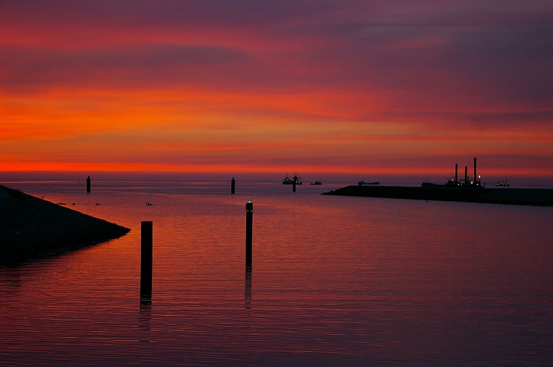

Experience A Slice Of Heaven In Kerala With These Top Kollam Tourist Places
1. Jatayu’s Earth Centre
Spread across 65 acres of land, Jatayu Earth's Centre is a rock-themed park built to promote mythology and adventure. The world’s largest bird sculpture is the main attraction at Jatayupara Nature Park and is one among the several Kollam famous places . It has a 6D theatre, a digital audio-visual room, cable car and the Siddha Cave Healing Centre. The virtual reality museum here tells the story of Jatayu to visitors. It is also home to umpteen adventure activities including paintball, laser tag, archery, bouldering, rock climbing, air-rifle shooting, zip lining, trekking, rappelling, valley crossing, etc.
Timings: 9.30 am to 5.30 pm
2. Thangassery Lighthouse
Looking for the best tourist places in Kollam? The Thangassery Lighthouse, also known as the Tangasseri Light House, boasts of being the second tallest on the entire coast of Kerala and is thus even one of the most visited lighthouses in the state on this account. The tower has a total height of 41 metres, or 135 feet, and has been operational since the year 1902.The majestic tower is clearly visible and distinct, with its painted red and white oblique bands, and looks pretty indeed in all its glory and majesty.
Timings: 10:00 AM - 1:00 PM & 2:00 PM - 6:00 PM , Closed on Monday
3. Palaruvi Falls
Palaruvi Waterfalls, which literally translates to ‘Stream of Milk’. The white-stream waterfall descending from the height of 300ft resembles the shape of a horse’s tail. An ideal time to visit this place is from June to January. It is the 32nd highest waterfall in India, also known to have Ayurvedic properties. The roaring sounds of the fall stand in stark contrast to the silence of the forests and mist-kissed mountains around it, therefore making it among the best tourist spots in Kollam.
Timings: 8 am to 4 pm
4. Sasthamkotta Lake
Sasthamkotta Lake is the largest of its kind in Kerala and said to have derived its name from an ancient Sastha Temple located near the lake. It is surrounded by hills on the 3 sides and is the largest source of drinking water for the residents of Kollam. The reason for it being a freshwater source is the presence of larva chaoborus in the water which is responsible of consuming bacteria from the lake water and makes its healthy and fit for drinking. The lake is home for 27 species of freshwater fish. You can do boating and swimming in this lake.
Timings: 24-hrs, preferred 10 am – 6 pm
5. Kollam Beach
Voted as the first 'Beach Wedding Destination' in Kerala, the Kollam Beach requires no introduction. There are a lot of places to visit in Kollam, but this beach is one of the most scenic and beautiful. This beach is famous among some travellers with the name of Mahatma Gandhi Beach and soothes wanderers with lush green, calm backwaters, and endless water activities. The beach also has a lighthouse called the Tangasseri Lighthouse, which is a major landmark there. The cultural and spiritual aura of the beach is indeed contagious and fills the visitors with renewed energy and passions.
Timings - 10:00 am to 5:00 pm.